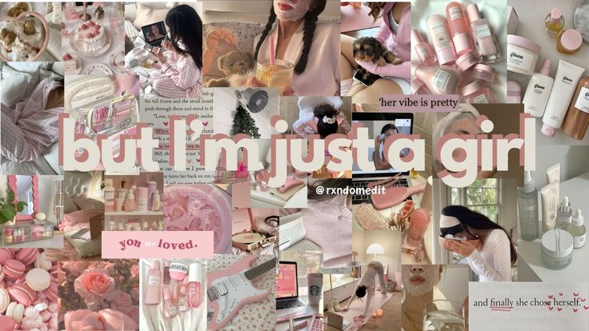

TNV quiz
Tu vibe es...
Coquette
Conoce más sobre tu estilo
ContextoEl inicio del Coquette es aún más antiguo de lo que pensamos. La palabra viene del francés que significa “coqueta” y como estilo toma elementos de la indumentaria del siglo XVIII con una gran inspiración en el rococó tardío de la reina Maria Antonieta, del cual incorpora elementos decorativos de la ropa como los moños y el encaje. Quizás el elemento más icónico del coquette, o al menos el que es más fácil de distinguir, es el lazo o moño, que se usa en el pelo y en la ropa. Este uso se remonta a la moda del periodo romántico de finales del mismo siglo XVIII y comienzos del siglo XIX, en donde después de las revoluciones y el nacimiento de las Repúblicas, la feminidad volvió a ser relevante. Esto fue visible en el vestido y el adorno de la ropa como elemento asociado con la clase social, ya mayormente sin monarquías.
Hoy en díaLa palabra clave de esta tendencia es “hiperfemeninidad”. Que es una manera de reivindicar la feminidad sin tener que usar prendas de origen masculino al mejor estilo de las tendencias masculinizadas como el Girl Boss o Mob Wife. Con esta tendencia se generan preguntas como ¿qué significa realmente esa feminidad y qué estereotipos de género integra? ¿por qué es objeto de burlas lo que se considera ultrafemenino si eso mismo nace de los roles de género estrictos que la sociedad espera que cumplan las mujeres?